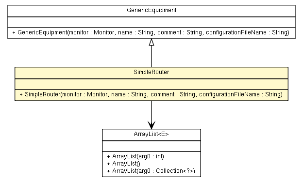

fr.univrennes1.cri.jtacl.equipments
Class SimpleRouter

java.lang.Object
 fr.univrennes1.cri.jtacl.core.network.NetworkEquipment
fr.univrennes1.cri.jtacl.equipments.GenericEquipment
fr.univrennes1.cri.jtacl.equipments.SimpleRouter
fr.univrennes1.cri.jtacl.core.network.NetworkEquipment
fr.univrennes1.cri.jtacl.equipments.GenericEquipment
fr.univrennes1.cri.jtacl.equipments.SimpleRouter
public class SimpleRouter
- extends GenericEquipment
A test case for a simple equipment doing routing and firewalling.
- Author:
- Patrick Lamaiziere
|
Field Summary |
protected java.util.ArrayList<java.lang.String> |
_acls
|
|
Constructor Summary |
SimpleRouter(Monitor monitor,
java.lang.String name,
java.lang.String comment,
java.lang.String configurationFileName)
Create a new SimpleRouter with this name and this comment. |
| Methods inherited from class java.lang.Object |
clone, equals, finalize, getClass, hashCode, notify, notifyAll, toString, wait, wait, wait |
_acls
protected java.util.ArrayList<java.lang.String> _acls
SimpleRouter
public SimpleRouter(Monitor monitor,
java.lang.String name,
java.lang.String comment,
java.lang.String configurationFileName)
- Create a new
SimpleRouter with this name and this comment.
- Parameters:
monitor - the Monitor monitor associated with this equipment.name - the name of the equipment.comment - a free comment for this equipment.configurationFileName - name of the configuration file to use (may be null).
loadAcl
protected void loadAcl(org.w3c.dom.Document doc)
loadIfaces
protected void loadIfaces(org.w3c.dom.Document doc)
configure
public void configure()
- Description copied from class:
NetworkEquipment
- Configures this
NetworkEquipment equipment.
This method is called by the Monitor monitor when all the
NetworkEquipment equipments have been created. This method should
be overrided, by example to read the configuration file of the equipment.
- Overrides:
configure in class NetworkEquipment
incoming
public void incoming(IfaceLink link,
Probe probe)
- Description copied from class:
NetworkEquipment
- This method is called when a
Probe probe is received on this
NetworkEquipment equipment.
This method should be overrided.
- Overrides:
incoming in class NetworkEquipment
- Parameters:
link - the IfaceLink link from which the probe was received.probe - the Probe received
packetFilter
protected void packetFilter(IfaceLink link,
Direction direction,
Probe probe)
Copyright © 2010. All Rights Reserved.